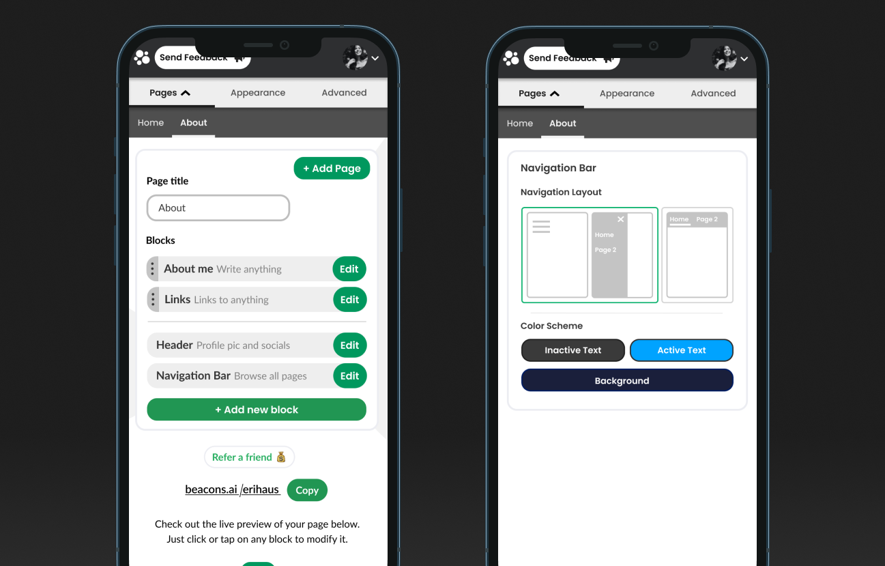

All Projects
Allowing Professionals to Protect Their Income • Summer 2021
As a UX Design Intern at Guardian Life, I helped make the insurance enrollment experience more educational and personalized. I designed the wireframes starting from the user landing on the enrollment page to choosing their coverage plan. Currently under NDA.
Contact me

Increasing Engagement on Users’ Websites • Winter 2021
As a Product Design Intern at Beacons, I designed and shipped a feature allowing users to organize their websites into pages. This makes it easier for visitors to their site to find what they are looking for and engage with their site.
Read case study
Taking Control of Your Content • Spring 2020
A feature to help users take control over their Tik Tok feeds. Involves user research, low-fi to high-fi prototypes, and usability testing.
Read case study